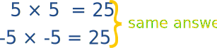
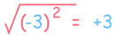

Exponents of Negative Numbers
Squaring Removes Any Negative
"Squaring" means to multiply a number by itself.
- Squaring a positive number gets a positive result: (+5) × (+5) = +25
- Squaring a negative number also gets a positive result: (−5) × (−5) = +25
Because a negative times a negative gives a positive. So:

"So what?" you say ...
... well take a look at this:

Oh no! We started with minus 3 and ended with plus 3.
When we square a number, then take the square root, we may not end up with the number we started with!
In fact we end up with the absolute value of the number:
√(x2) = |x|
That also happens for all even (but not odd) Exponents.
Try here:
Even Exponents of Negative Numbers
An even exponent always gives a positive (or 0) result.
That simple fact can make our life easier:
Do you see the −1, +1, −1, +1 pattern?
(−1)odd = −1
(−1)even = +1
So we can "shortcut" some calculations, like:
Example: What is (−1)97 ?
97 is odd, so:
(−1)97 = −1
Example: What is (−2)6 ?
26 = 64, and 6 is even, so:
(−2)6 = +64
Roots of Negative Numbers
Example: What is the value of x here: x2 = −1
Does x=1?
1 × 1 = +1
Does x=−1?
(−1) × (−1) = +1
We can't get −1 for an answer!
It seems impossible!
Well, it is impossible using Real Numbers.
But we can do it using Imaginary Numbers.
In other words:
√−1 is not a Real Number ...
... it is an Imaginary Number
This is true for all even roots:
An Even Root of a Negative Number is Not Real
So just be careful when taking square roots, 4th roots, 6th roots, etc.